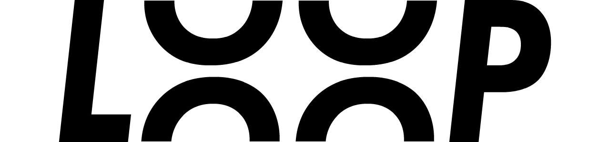
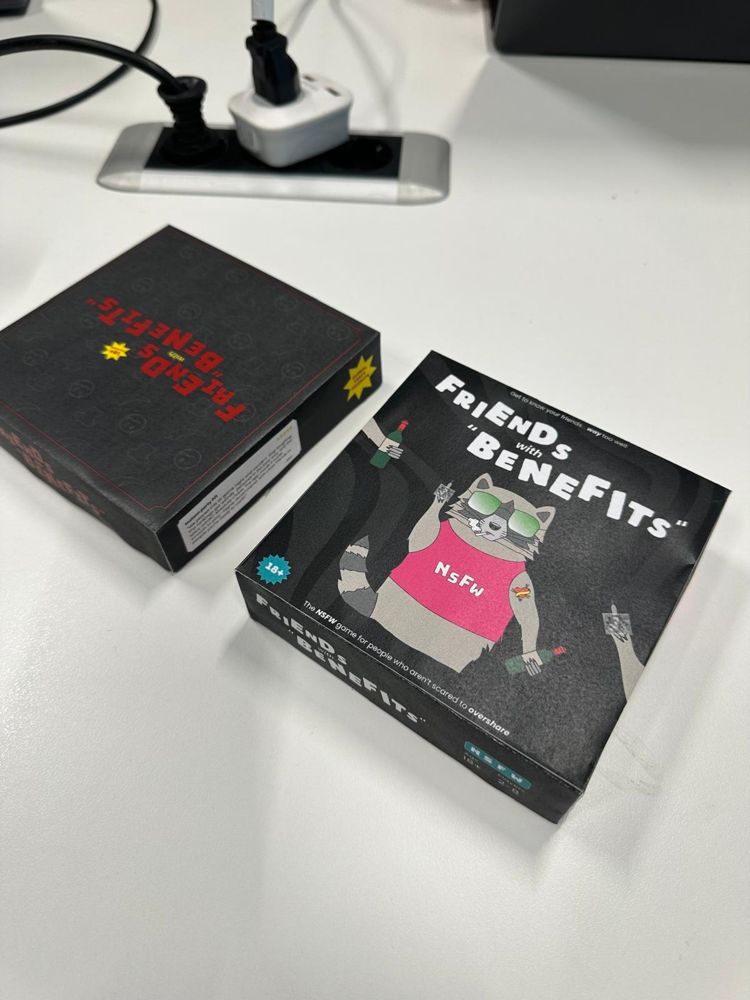
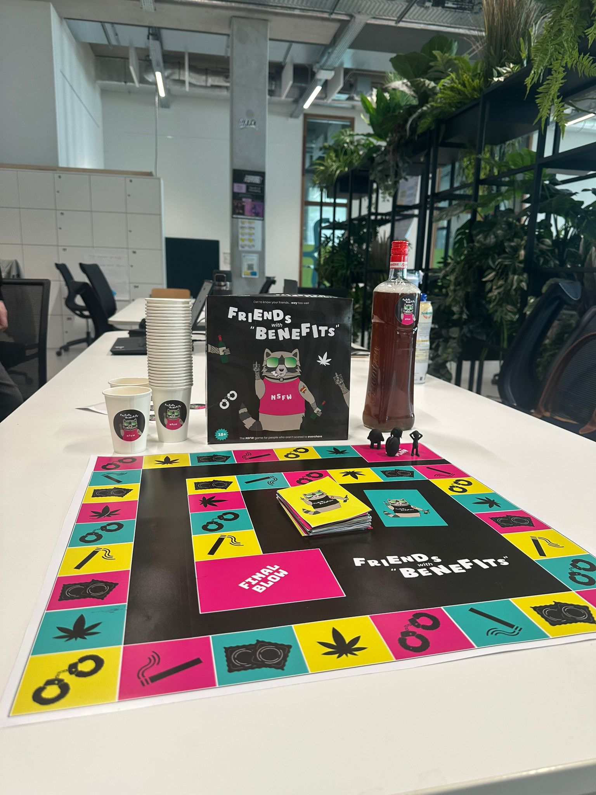

Loop - Media Agency
Logo
At first I only had a static logo. A teacher of ours, Jan, gave me the feedback that if he looks at it for too long it starts looking more like the word Luup instead of Loop. That is a reason why I made the illustration. This way it is clear that the logo stand for Loop.
Poster
After the first iteration was done, I asked feedback to my groupmates. That is when I got the feedback to add more yellow so it is more fitting with the website which was being made by other members. That is why I changed the big arch from purple to yellow.


Style scape
After everyone's style scape was done, we created a final one. We did this by comparing all the different styles. We wrote down the differences and similarities. That is how we ended up with a black and neon combination with playful shapes and a futuristic font.

Friends with "Benefits"
Change of concept
We started of with an educational news game for young teenagers. When we presented our idea to our stake holder Maikel, he was not very enthusiastic at all. That is why we went back to square one and did even more market research. That is when I came up with a ranking and guessing game.
Continuous iterations
I took it upon me to create the box and board for our game. I started by doing research on what is essential on a game box. I made a checklist with all the essentials. Then I made a rough sketch to just know where I want to place all the elements. After that I Started designing in Illustrator. After I thought it looked good, I asked feedback from our stakeholders Petra and Maikel. They both said a package needs to be attention grabbing and giving out enough information from the front. That is why I added a few things. I put the 18+ sticker and “a party game for friends and more” on the front and sides. I also got the feedback to change the review section on the box because it looked more like a warning. After all of the feedback was integrated I printed out a small version and put it together.


A/B testing
Another teammate had also made a design and printed it out. We did A/B testing with the target audience. Turns out the original style scape was not their cup of tea. That is why we ended up with a more bright neon color scheme. This is also because the concept changed again. Instead of having the three levels, everything is spicy and unhinged now.

Showcase
At the showcase event we got a lot of questions about the icons on the tiles. That is why we are thinking about adding punishment and powerup tiles to the board.
Portfolio
Visual identity
Because last semester I had a dark purple theme, I did not feel like it fit me. This time around I wanted a more light, fresh and flowy theme. When I tested my new web design with friends and family who know me very well, they also said that they think the beige and pink website fits me better. My friend even said “this is how I image the inside of your head looks like”.
Coach feedback
At first I had everything written in chronological order per project. When I showed this to my coach Chris, he told me this makes it very unclear and messy. He prefers everything written per learning outcome. That is why I immediately started rewriting everything. Currently the starts around the LO's on the homepage do not move the way I want them to. When I told Chris about this, he told me to leave it as it is because there is a beauty in the imperfection.
User test
After I have all of the pages somewhat done, I want to do a detailed usability test. Because I want to add many features with the images I need to test if people can get along with it.